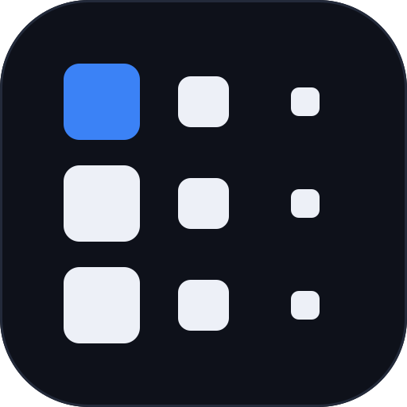

01 — Primary Mark
"Push" mark · mark.svg
- grid · 3 × 3 cells, pitch 32u, cell centers (16, 48, 80)
- col 1 · server · 24×24u, rx 5 — full weight, origin pixel in ocean #3b82f6
- col 2 · in transit · 16×16u, rx 4 — image streaming over the wire
- col 3 · clients · 9×9u, rx 2.5 — bare-metal nodes receiving the boot
- optical centering · every square centered on its cell, all radii ∝ size
02 — Horizontal Lockup · lockup.svg
字标组合（Archivo 700, -2% tracking）
03 — Favicon · favicon.svg (actual pixels, 文件实际渲染)
16px 简化版：3×2 加粗阵列，去掉最小像素列
04 — App Icon · icon.svg
深色底 (#0e111a) · rx ≈ 22%

macOS 连续圆角遮罩
普通圆角矩形 (22%)
05 — README Banner Mock
GitHub 仓库顶部
PxeLab
Network boot for bare metal — no USB, no CDs.
GoAGPL-3.0DHCP · TFTP · HTTP
06 — Boot Splash Mock
启动界面
PxeLab
$ pxe boot --all · network boot for bare metal
07 — Monochrome
单色版：不依赖颜色依然成立（accent 像素一并去色）
08 — Colors
用色（全部取自项目既有 palette）
Ocean — origin pixel#3b82f6
Ink — mark on dark#edf0f7
Ink — mark on light#12151d
辅助场景可用 green #22c55e / cyan #06b6d4 系状态色，但标志本体只锁定 ocean 一个 accent。
PXELAB · LOGO DIRECTION B · BENCHMARK MIGRATION (TAILSCALE) · ARCHIVO + JETBRAINS MONO · 1440×900